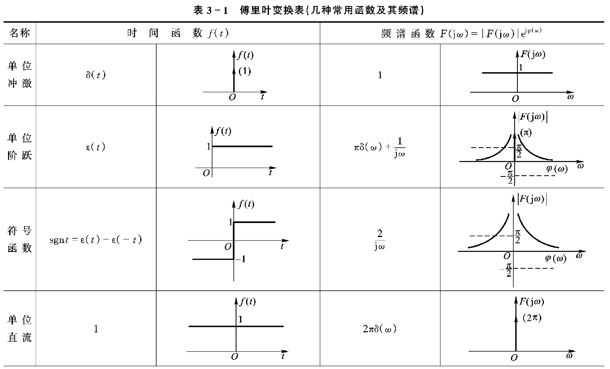
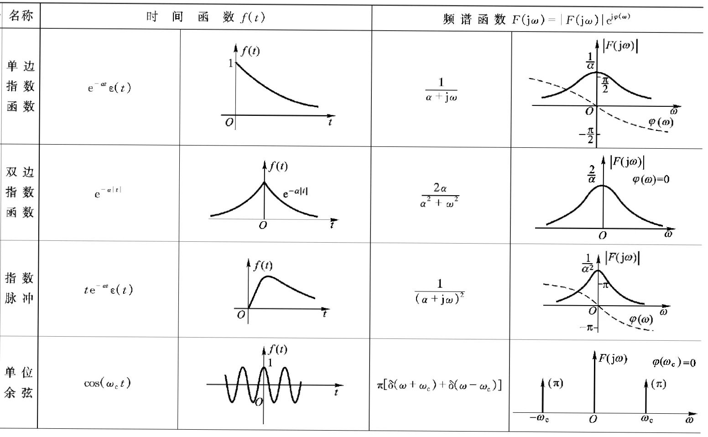
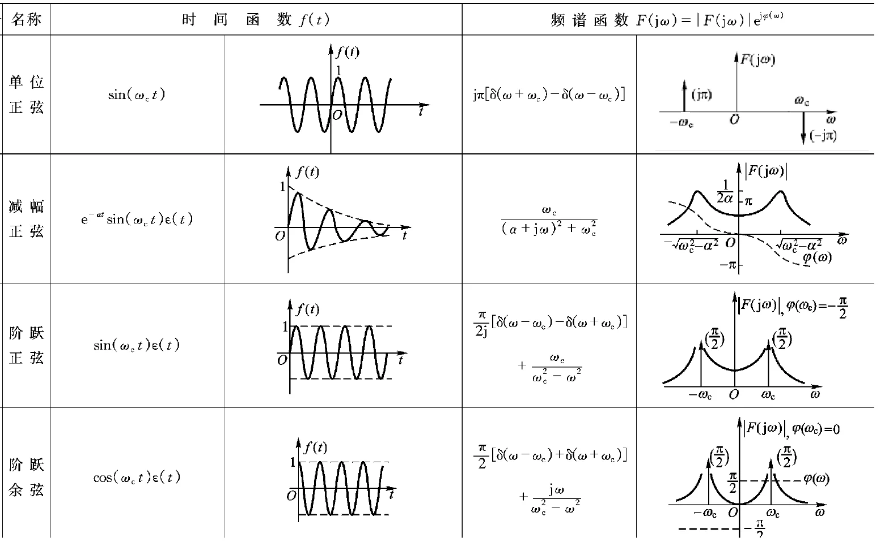
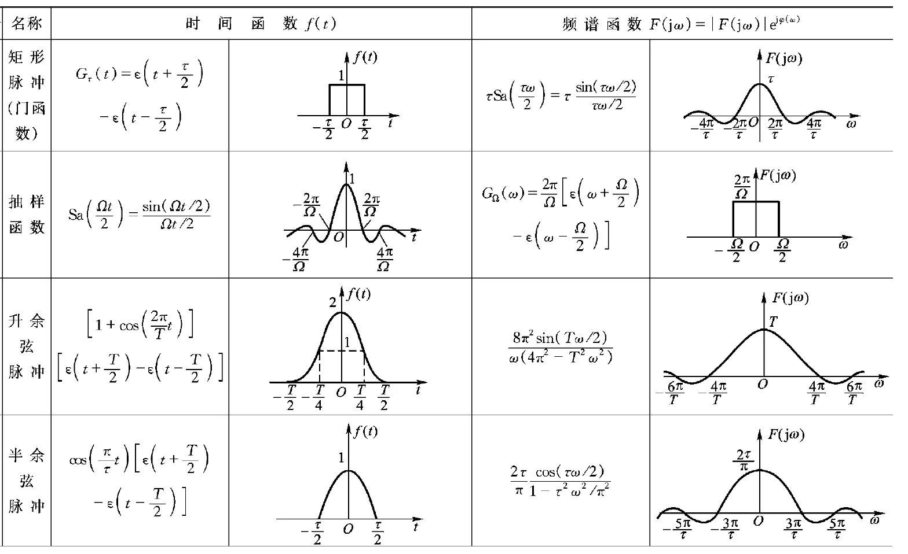

05 | 平稳过程 ¶
约 4156 个字 6 张图片 预计阅读时间 16 分钟
Cheet Sheet¶
本章题目比较格式化，大概都是这种流程，背公式就行了，对常用的傅立叶变换对要记忆清楚
- 一般都是第一问算均值和自相关函数，然后验证是不是宽平稳过程（有独立的就拆开，没有的利用 pdf 进行积分）
- 第二问算时间均值和时间相关函数，然后验证均值和自相关的各态历经性
- 求谱密度（与傅立叶变换相联系）
① 证明是宽平稳过程
- \(E[X(t)]\) 为常数
- \(R_X\) 为只和 \(\tau\) 有关的函数
② 均值各态历经
- \(\langle X(t)\rangle\equiv\mu_X\)
- \(\lim_{T\rightarrow\infty} \frac1T\int_0^\infty C_x(\tau) d\tau\)
- 在 \(\underset{\tau\rightarrow+\infty}\lim R_X(\tau)\) 存在的条件下，证明 \(\underset{\tau\rightarrow+\infty}\lim R_X(\tau)=\mu_X^2\)
③ 自相关函数各态历经
- \(\langle X(t)X(t+\tau)\rangle\equiv R_X(\tau)\)
④ 功率谱密度：对自相关函数进行傅里叶变换 ; 实、非负、偶函数
- 傅立叶变换的性质：时域相乘等于频域卷积
| 时域 | 频域 |
|---|---|
| \(e^{-a\mid\tau\mid}\) | \(\frac{2a}{a^2+\omega^2}\) |
| \(\frac{sin\omega_0\tau}{\pi\tau}\) | \(\begin{cases}1\quad\mid\omega\mid\leq\omega_0\\[2ex]0\quad\mid\omega\mid>\omega_0\end{cases}\) |
| \(1\) | \(2\pi\delta(\omega)\) |
| \(\delta(\tau)\) | \(1\) |
| \(cos\omega_0\tau\) | \(\pi[\delta(\omega+\omega_0)+\delta(\omega-\omega_0)]\) |
因此
平稳随机过程 ¶
一维分布与时间 \(t\) 无关
二维分布只与时间间隔 \(\tau\) 有关
- 均值和 \(t\) 无关
- 方差与 \(t\) 无关
- 自相关函数与时间间隔有关，与时间起点无关
无线电设备中热噪声电压 \(X(t)\) 是由于电路中电子的热运动引起的，这种热扰动不随时间而变； 连续测量飞机飞行速度产生的测量误差\(X(t)\)，是由很多因素（如仪器振动、电磁波干扰、气候等）引起的，但主要因素不随时间而变；
严平稳过程 ¶
各维概率密度函数都不随时间的推移而变化
\(\{X(t);t\in T\}\) 中所有 \(X_t\) 同分布， 且 \(\forall\;n\geq2\quad(X_{t_1},X_{t_2},\dots,X_{t_n})\) 的分布仅与时间差 \(t_i-t_{i-1}\) 有关，而与起始时间 \(t_1\) 无关。
宽平稳过程 ¶
均值为常数，自相关函数仅仅是时间间隔的函数
存在二阶矩的严平稳过程。平稳过程均指宽平稳过程。
- 均值函数：\(\mu_X(t)=E[X(t)]=E[X(0)]\overset{记为}\Longrightarrow\mu_X\;\)( 常数 )
- 方差函数：\(D[X(t)]=R_X(0)-\mu_X^2\;\)( 常数 )
- 自相关函数：
- \(E[X(t)X(t+\tau)]=E[X(0)X(\tau)]=R_X(\tau)\)( 为时间差的函数 )
- \(E[X^2(t)]=R_X(0) = Var(X)\)( 常数 )
- 自协方差函数：\(C_X(\tau)=R_X(\tau)-\mu_X^2\)
平稳相关过程 ¶
若 { \(X(t);t\in T\) }、{ \(Y(t);t\in T\) } 是两个平稳过程，\(X(t),Y(t)\) 的互相关函数也为时间差 \(\tau\) 的函数 \(\overset{记为}\Longrightarrow R_{XY}(\tau)\)，称 \(X(t),Y(t)\) 是平稳相关 / 联合（宽）平稳的。
平稳过程自相关函数的性质 ¶
-
功率特性
- \(R_X(0)=E[X^2(t)]=\psi_X^2\geq0 = S\)
- 物理意义 : 随机过程的平均功率
- \(R(\infty) = E^2[\xi(t)] = a^2\)
- 物理意义 : 随机过程的直流功率
- 推导 : 时间间隔无限大时 , \(\xi(t)\) 与 \(\xi(t+\tau)\) 趋于独立
- \(R(\infty) = \lim_{\tau \to \infty} E[\xi(t)\xi(t+\tau)] = \lim_{\tau \to \infty} E[\xi(t)]E[\xi(t+\tau)] = E[\xi(t)]E[\xi(t)] = E^2[\xi(t)]\)
- \(R(0) - R(\infty) = E[\xi^2(t)] - a^2 = \sigma^2\)
- 物理意义 : 随机过程的交流功率对应方差公式
- \(R_X(0)=E[X^2(t)]=\psi_X^2\geq0 = S\)
-
对称性
- \(R_X(-\tau)=R_X(\tau)\) ( 偶函数 )
- \(R_{XY}(-\tau)=R_{YX}(\tau)\) ( 非奇非偶 )
-
有界性
- \(\mid R_X(\tau)\mid\leq R_X(0)\)
- \(\mid C_X(\tau)\mid\leq C_X(0)=\sigma_X^2\)
- 给出了自相关函数的上界 , 与自身时刻相关性最大
- \(\mid R_{XY}(\tau)\mid^2\leq R_X(0)R_Y(0)\)
- \(\mid C_{XY}(\tau)\mid^2\leq C_X(0)C_Y(0)\)
- 相关 / 协方差函数在时间差 \(\tau\) 为 0 时取得最大值
-
非负定性 \(R_X(\tau)\) 是非负定的，即 \(\forall\;t_1,t_2,\dots,t_n\in T\) 和 \(\forall\;a_1,a_2,\dots,a_n\in R\) ，有
$$ sum_{i,j=1}^n R_X(t_i-t_j)a_ia_jgeq0 $$
-
周期性 \(\{X(t);t\in T\}\) 是周期为 \(T_0\) 的平稳过程 \(\Leftrightarrow\) \(R_X(t)\) 是周期为 \(T_0\) 的函数
各态历经性 ¶
只有一个样本函数，如何刻画
\(x(t)\) 为随机过程的任意一个实现（样本函数）
时间均值 ¶
\(\langle X(t)\rangle=\underset{T\rightarrow+\infty}\lim\frac 1{2T}\int_{-T}^TX(t)dt\)
\(\langle X_n\rangle=\underset{N\rightarrow+\infty}\lim \frac 1N\sum_{n=1}^NX_n\)
时间相关函数 ¶
\(\langle X(t)X(t+\tau)\rangle=\underset{T\rightarrow+\infty}\lim\frac 1{2T}\int_{-T}^TX(t)X(t+\tau)dt\)
\(\langle X_nX_{n+m}\rangle=\underset{N\rightarrow+\infty}\lim \frac 1N\sum_{n=1}^NX_nX_{n+m}\)
各态历经性 ¶
均值具有各态历经性 \(P(\langle X(t)\rangle=\mu_X)=1\) / \(P(\langle X_n\rangle=\mu_X)=1\) （即时间均值恒等于均值函数）
自相关函数具有各态历经性 \(\forall\;\tau\quad P(\langle X(t)X(t+\tau)\rangle=R_X(\tau))=1\) （即时间相关函数恒等于自相关函数）
含义：
- 随机过程中的任一实现都经历了随机过程的所有可能状态
- 化“统计平均”为“时间平均”，用任意一个样本函数刻画整个随机过程的所有特征，简化实际的测量和计算
各态历经性 推出 平稳 ; 平稳 不能推导 各态历经性
均值各态历经定理 ¶
设 \(\{X(t), -\infty < t < \infty\}\) 为平稳过程，则 \(P\left\{ \langle X(t) \rangle = \mu_X \right\} = 1\), 等价于 \(\lim_{T \to +\infty} \frac{1}{T} \int_0^T C_X(\tau) \, d\tau = 0\)
推论：在 \(\underset{\tau\rightarrow+\infty}\lim R_X(\tau)\) 存在的条件下，若 \(\underset{\tau\rightarrow+\infty}\lim R_X(\tau)=\mu_X^2\) ，则均值具有各态历经性，反之不具有。
平稳过程的功率谱密度 ¶
定义 ¶
假定 \(f(t)\) 为随机过程 \(\xi(t)\) 的任一实现，对其进行 \(T\) 长度的截断，记为 \(f_T(t)\)，其傅里叶变换为 \(F_T(\omega)\)，则任一实现的功率谱为：
故 \(\xi(t)\) 的功率谱密度为：
维纳 - 辛钦定理 ¶
\(S_X(\omega)\) 是 \(\omega\) 的非负实偶函数，与自相关函数 \(R_X(\tau)\) 是一对 \(Fourier\) 变换对。
平稳随机过程 \(\xi(t)\) 的功率谱密度函数 \(P_{\xi}(\omega)\) 和自相关函数 \(R(\tau)\) 为一对傅里叶变换对。
或
\(\omega = 2\pi\cdot f\) 所以积分的时候有变换关系
因为 \(S_X\;R_X\) 都是实偶函数，所以 \(R_X\overset{F}\longleftrightarrow S_X\quad S_X\overset{F}\longleftrightarrow 2\pi R_X\)
性质 ¶
实、非负、偶
- 功率谱密度具有非负性：\(P_{\xi}(f) \geq 0\)
- 功率谱密度是偶函数：\(P_{\xi}(-f) = P_{\xi}(f)\)
- 单边、双边功率谱密度互换：\(P_{\xi\text{单边}}(f) = \begin{cases} 2P_{\xi\text{双边}}(f) & f \geq 0 \\ 0 & f < 0 \end{cases}\)
平均功率计算方法 ¶
利用自相关函数计算
利用功率谱密度
常用傅立叶变换对 ¶
这部分的题目和信号与系统相关知识联系比较紧密，可以对照着进行学习
| 时域 | 频域 |
|---|---|
| \(e^{-a\mid\tau\mid}\) | \(\frac{2a}{a^2+\omega^2}\) |
| \(\begin{cases}1-\frac{\mid\tau\mid}{T}\quad\mid\tau\mid\leq T\\[2ex]0\quad\mid\tau\mid>T\end{cases}\) | \((\frac{sin(\omega T/2)}{\omega T/2})^2\) |
| \(\frac{sin\omega_0\tau}{\pi\tau}\) | \(\begin{cases}1\quad\mid\omega\mid\leq\omega_0\\[2ex]0\quad\mid\omega\mid>\omega_0\end{cases}\) |
| \(1\) | \(2\pi\delta(\omega)\) |
| \(\delta(\tau)\) | \(1\) |
| \(cos\omega_0\tau\) | \(\pi[\delta(\omega+\omega_0)+\delta(\omega-\omega_0)]\) |
| \(R_X(\tau)cos\omega_0\tau\) | \(\frac12[S_X(\omega+\omega_0)+S_X(\omega-\omega_0)]\) |
各种常见信号傅里叶变换需要记住    
- \(cos(\omega_0 t)\) 频谱搬移
- 门函数的表达 \(u(t) - u(t-t_0)\)
互谱密度 ¶
设 \(X(t)\) 和 \(Y(t)\) 是两个平稳相关的随机过程 ,
定义 : \(S_{XY}(\omega) = \lim_{T \to +\infty} \frac{1}{2T} E \left\{ F_X(-\omega, T) F_Y(\omega, T) \right\}\) 为平稳过程 \(X(t)\) 和 \(Y(t)\) 的互谱密度。
它有以下特性 :
- \(S_{XY}(\omega) = S_{YX}^*(\omega)\), 即 \(S_{XY}(\omega)\) 和 \(S_{YX}(\omega)\) 互为共轭函数
- 当 \(\int_{-\infty}^{+\infty} |R_{XY}(\tau)| d\tau < \infty\) 时 , 成立维纳 - 辛钦公式 \(S_{XY}(\omega) = \int_{-\infty}^{+\infty} R_{XY}(\tau) e^{-i\omega\tau} d\tau, \quad R_{XY}(\tau) = \frac{1}{2\pi} \int_{-\infty}^{+\infty} S_{XY}(\omega) e^{i\omega\tau} d\omega;\)
例题 ¶
严平稳 ¶
例 5.1.1
设 \(\{X_{n}; n=1,2,\cdots\}\) 是随机变量序列 , \(E(X_{n})=\mu\), \(D(X_{n})=\sigma^{2}\).
(1) 若 \(X_{1},X_{2},\cdots\) 两两不相关 , 问 \(\{X_{n};n=1,2,\cdots\}\) 是否为宽平稳序列 ?
(2) 若 \(X_{1},X_{2},\cdots\) 独立同分布 , 问 \(\{X_{n};n=1,2,\cdots\}\) 是否为严平稳序列 ?
(3) 若 \(X_{1},X_{2},\cdots\) 两两不相关 , 对 \(n\geqslant 1\),
这里 \(\sigma^{2}>0\). 问 \(\{X_{n};n=1,2,\cdots\}\), 是否为宽平稳序列 ? 是否为严平稳序列 ?
(1) 当 \(\{X_{n};n=1,2,\cdots\}\) 是两两不相关随机变量序列时 , 由条件知 , \(E(X_{n})=\mu\),
即均值函数是常数 , 自相关函数只与 \(n-m\) 有关 , 因此 \(\{X_{n};n=1,2,\cdots\}\) 是宽平稳序列 .
(2) 当 \(\{X_{n};n=1,2,\cdots\}\) 是相互独立随机变量序列时 , 设 \(X_{n}\) 的分布函数为 \(F(x)\), 对 \(n_{1}<n_{2}<\cdots<n_{k}\), \((X_{n_{1}},X_{n_{2}},\cdots,X_{n_{k}})\) 在点 \((x_{1},x_{2},\cdots,x_{k})\) 处的分布函数值
而 \((X_{n_{1}+m},X_{n_{2}+m},\cdots,X_{n_{k}+m})\) 在点 \((x_{1},x_{2},\cdots,x_{k})\) 处的分布函数值
由定义知 , \(\{X_{n};n=1,2,\cdots\}\) 是严平稳序列 .
例 5.1.2
设 \(X\) 是一个非常值随机变量 , 对任何 \(n \geq 1\), 令 \(Y_n = X\). 问 \(\{Y_n;n = 1,2,\cdots\}\) 是否为严平稳序列 ? 当 \(E(X^2) < \infty\) 时 , \(\{Y_n;n = 1,2,\cdots\}\) 是否为宽平稳序列 ?
对任何 \(k \geq 1\), \(n_1, n_2,\cdots, n_k \geq 1\), \(m \geq 1\), 有
所以 \(\{Y_n;n = 1,2,\cdots\}\) 为严平稳序列 .
当 \(E(X^2) < \infty\) 时 , \(E(Y_n) = E(X)\) 存在且为常数 , \(E(Y_mY_n) = E(X^2)\) 为常数 . 所以 \(\{Y_n;n = 1,2,\cdots\}\) 为宽平稳序列 .
求解宽平稳、各态历经性、谱密度 ¶
例题
已知信号过程 \([X(t);\, t \geq 0]\)，满足 \(P(X(t) = \pm 1) = \frac{1}{2}\)，且在区间 \((t, t+\tau]\) 内取正负号的次数服从参数为 \(\lambda \tau\) 的泊松分布。另有过程 \(Y(t) = \cos(t - \theta)\)，\(-\infty < t < +\infty\)，其中 \(\theta\) 在区间 \((0, 2\pi)\) 上服从均匀分布。\(\{X(t);\, t \geq 0\}\) 与 \(\{Y(t);\, -\infty < t < +\infty\}\) 相互独立。定义 \(Z(t) = X(t)Y(t) + 1\)，\(0 \leq t < +\infty\)。请回答下列问题：
-
\(\{X(t);\, t \geq 0\}\) 的均值函数 \(\mu_X(t)\) 和自相关函数 \(R_X(t, t+\tau)\) 为
- (A) \(\mu_X(t) = 0\)，\(R_X(t, t+\tau) = \dfrac{1}{2} e^{-2\lambda \tau}\)
- (B) \(\mu_X(t) = 0\)，\(R_X(t, t+\tau) = e^{-2\lambda \tau}\)
- (C) \(\mu_X(t) = 0\)，\(R_X(t, t+\tau) = \dfrac{1}{2} e^{-2\lambda |\tau|}\)
- (D) \(\mu_X(t) = 0\)，\(R_X(t, t+\tau) = e^{-2\lambda |\tau|}\)
-
\(\{X(t);\, t \geq 0\}\) 的谱密度函数 \(S_X(\omega)\) 为
- (A) \(\dfrac{2\lambda}{\lambda^2 + \omega^2}\)
- (B) \(\dfrac{4\lambda}{2\lambda^2 + \omega^2}\)
- (C) \(\dfrac{2\lambda}{4\lambda^2 + \omega^2}\)
- (D) \(\dfrac{4\lambda}{4\lambda^2 + \omega^2}\)
-
\(\{Y(t);\, -\infty < t < +\infty\}\) 的时间均值 \(\langle Y(t) \rangle\) 为
- (A) \(0\)
- (B) \(\cos t\)
- (C) \(\sin(t - \theta)\)
- (D) \(\cos(t - \theta)\)
-
\(\{Y(t);\, -\infty < t < +\infty\}\) 的时间相关函数 \(\langle Y(t) Y(t+\tau) \rangle\) 为
- (A) \(0\)
- (B) \(\cos 2\tau\)
- (C) \(\cos \tau\)
- (D) \(\dfrac{1}{2} \cos \tau\)
-
\(\{Y(t);\, -\infty < t < +\infty\}\) 的各态历经性为
- (A) 均值、自相关函数都不具有各态历经性
- (B) 均值具有各态历经性，但自相关函数不具有各态历经性
- (C) 自相关函数具有各态历经性，但均值不具有各态历经性
- (D) 均值、自相关函数都具有各态历经性
-
下列等式中正确的是
- (A) \(\mu_Z(t) = \mu_X(t)\mu_Y(t)\)
- (B) \(R_Z(t, t+\tau) = R_X(t, t+\tau) + R_Y(t, t+\tau)\)
- (D) \(R_Z(t, t+\tau) = R_X(t, t+\tau) R_Y(t, t+\tau) + 1\)
- (C) \(\mu_Z(t) = \mu_X(t) + \mu_Y(t) + 1\)
-
关于 \(\{Z(t);\, t \geq 0\}\) 的叙述错误的是
- (A) \(\{Z(t);\, t \geq 0\}\) 是平稳过程
- (B) \(\{Z(t);\, t \geq 0\}\) 的自相关函数为 \(\dfrac{1}{2} e^{-2\lambda|\tau|} \cos\tau + 1\)
- (C) \(\{Z(t);\, t \geq 0\}\) 的谱密度函数为 \(\dfrac{\lambda}{4\lambda^2 + (\omega-1)^2} + \dfrac{\lambda}{4\lambda^2 + (\omega+1)^2} + \pi\delta(\omega)\)
- (D) \(\{Z(t);\, t \geq 0\}\) 的均值具有各态历经性 $
答案： DDADDDC
其中 \(X(t)\) 题干比较难以理解，但其实作为选择题可以交叉排除做出来。
顺序是：
- \(X(t)\) 均值、自相关、谱密度、时间均值、时间自相关
- \(Y(t)\) 均值、自相关、谱密度、时间均值、时间自相关
求 \(Z(t)\) 的谱密度的时候，可以使用时域相乘等于频域卷积的性质，但是要注意公式前面的 \(\frac{1}{2\pi}\) 不要遗漏
- 均值函数 \(\mu_X(t)\) 由于 \(X(t)\) 在任一时刻取值为 \(\pm 1\) 且概率各为 \(1/2\)，其期望为：
因此所有选项中均值函数均为 0，符合题设。
- 自相关函数 \(R_X(t, t+\tau)\) 需计算 \(\mathbb{E}[X(t)X(t+\tau)]\)。由题意可知：
- \(X(t)\) 在区间 \((t, t+\tau)\) 内的符号翻转次数 \(N(\tau)\) 服从参数为 \(\lambda\tau\) 的泊松分布。
- \(X(t+\tau)\) 的符号取决于 \(N(\tau)\) 的奇偶性：若 \(N(\tau)\) 为偶数（含 0 次
） ，则 \(X(t+\tau) = X(t)\)；若为奇数，则 \(X(t+\tau) = -X(t)\)。
因此：
代入自相关函数得：
本题目改编自课本例 5.1.6

设 \(\{X(t);-\infty<t<\infty \}\) 是宽平稳过程，\(X(t)=Acos(t+2\pi B)\) ，\(A,B\) 独立且服从 \((0,1)\) 上的均匀分布
（1）均值函数
（2）自相关函数
（3）谱密度
（4）时间均值
具有各态历经性。
（5）时间相关函数
不具有各态历经性。
（6）综合（4
已知随机过程 \(\xi(t)=A\cos(\omega_{c}t+\theta)\)，\(A\) 和 \(\omega_{c}\) 均为常数。\(\theta\) 在 \([0,2\pi]\) 均匀分布。\(f(\theta)=\frac{1}{2\pi}\)，\(\theta\in[0,2\pi]\)。
1) 证明 \(\xi(t)\) 广义平稳；期望为常数，\(R(t,t+\tau)=R(\tau)\)。
只与 \(\tau\) 有关。
\(\therefore \xi(t)\) 广义平稳
2) 求 \(\xi(t)\) 的功率谱密度和平均功率
方法 1 求 \(R(0)\):
方法 2 求积分 :
注意到
3) 判断 \(\xi(t)\) 是否具有各态历经性
例题 3
已知随机过程 \(z(t)=m(t)\cos(\omega_{c}t+\theta)\)，\(m(t)\) 为广义平稳过程， 其自相关函数为 \(R_{m}(\tau)=\begin{cases}1+\tau & -1<\tau<0 \\1-\tau & 0<\tau<1 \\0 & \text{其他}\end{cases}\)
随机变量 \(\theta\) 在 \([0,2\pi]\) 服从均匀分布，与 \(m(t)\) 统计独立。
1）证明 \(z(t)\) 广义平稳
所以是广义平稳
2）求自相关函数 \(R_{z}(\tau)\) 并画出波形
所以在画图的时候，先画出包络，再绘制函数

3）求功率谱密度 \(P_{z}(f)\) 及功率
\(R_M\) 是一个三角波，我们已知三角波可以由两个门函数卷积而来，所以我们可以将 \(R_M\) 分解为两个门函数，然后对每个门函数进行傅里叶变换，最后将两个门函数的傅里叶变换相乘，得到 \(P_{z}(\omega)\)。
平均功率
例题 5
设 \(\{X(t);-\infty < t < \infty\}\) 是宽平稳过程，若自相关函数 \(R_X(\tau)=2\delta(\tau)+2\)，则谱密度 \(S_X(\omega)=\) __，\(\{X(t)\}\) 的均值各态历经当且仅当均值 \(\mu_X=\) ____。
解：
1. 求谱密度 \(S_X(\omega)\)
答案：\(2+4\pi\delta(\omega)\)
2. 求均值 \(\mu_X\)
答案：\(\pm\sqrt{2}\)
例题 6
设 \(\{X(t);-\infty<t<\infty\}\) 是宽平稳过程，若均值函数 \(\mu_{X}=2\)，自相关函数 \(R_{X}(\tau)=e^{-|\tau|}+a\)，则 \(\{X(t)\}\) 的谱密度 \(S_{X}(\omega)=\)_， 均值各态历经当且仅当均值 \(a=\) ___。
答案：
- \(\frac{2}{1+\omega^{2}}+2\pi a\delta(\omega)\)
- \(4\)
例题 7
设 \(\{B(t);t\geq0\}\) 是标准布朗运动，\(A\sim N(1,1)\)，且 \(A\) 与 \(\{B(t);t\geq0\}\) 独立。设 \(X(t)=A[B(t+1)-B(t)]\)，\(t\geq0\)。
1. 计算 \(\{X(t)\}\) 的均值函数和自相关函数，并证明它是宽平稳过程
(1)\(\mu_X(t)=EX(t)=0\)
因为 \(\mu_X(t)\) 是常数 ,\(R_X(t,t+\tau)\) 只与 \(\tau\) 有关 , 所以 \(\{X(t)\}\) 是宽平稳过程。
2. 判断 \(\{X(t)\}\) 的均值是否具有各态历经性，并说明理由
(2)\(\lim_{\tau\to\infty}R_X(\tau)=0=\mu_X^2\), 所以均值具有各态历经性
例题 8
设 \(X(t)=A\cos(t+\Theta)+B\)，\(-\infty<t<\infty\)，这里 \(A,B,\Theta\) 相互独立，\(A\sim N(1,1)\)，\(\Theta\sim U(0,2\pi)\)，\(B\) 具有概率密度 \(f(x)=\begin{cases}|x|,&-1<x<1;\\0,&其它.\end{cases}\)
1. 计算 \(\{X(t)\}\) 的均值函数和自相关函数，并证明它是一个宽平稳过程
(1) \(\mu _{X}( t) = 0\)
因为 \(\mu_{X}(t)\) 是常数，\(R_{X}(t,t+\tau)\) 只与 \(\tau\) 有关，所以是宽平稳
答案
(1)
- \(\mu _{X}( t) = 0\)
- \(R_{X}(t,t+\tau)=\frac{1}{2}+\cos\tau\)
因为 \(\mu_{X}(t)\) 是常数，\(R_{X}(t,t+\tau)\) 只与 \(\tau\) 有关，所以是宽平稳
(2)
- \(\langle X( t) \rangle = \operatorname* { lim} _{T\to \infty }\frac 1{2T}\int _{- T}^{T}X( t) dt= B\)
- \(\langle X(t)X(t+\tau) \rangle=\lim_{T\to\infty}\frac{1}{2T}\int_{-T}^{T}X(t)X(t+\tau)dt=\frac{A^{2}}{2}\cos\tau+B^{2}\)
(3) 都不具有各态历经性
例题 9
设 \(X(t)=A\cos(t+2\pi B)\), \(-\infty<t<\infty\), 这里 \(A\), \(B\) 相互独立同服从区间 \((0,1)\) 上的均匀分布。
1. 计算 \(\{X(t); -\infty<t<\infty\}\) 的均值函数和自相关函数 , 并证明它是一个宽平稳过程
(2) 计算 \(\{X(t); -\infty<t<\infty\}\) 的时间均值 \(\langle X(t) \rangle\) 和时间相关函数 \(\langle X(t)X(t+\tau) \rangle\), 判断 \(\{X(t); -\infty<t<\infty\}\) 是否为各态历经过程 , 说明理由。
(1) 首先计算均值和自相关函数：
因此，\(\{X(t)\}\) 是宽平稳过程。
(2) 计算时间均值和时间相关函数：
- 时间均值为 \(\langle X(t) \rangle = \lim_{T\to\infty} \frac{1}{2T} \int_{-T}^{T} (A\cos(t+2\pi B))\,dt = 0\)
由于 \(P(\langle X(t) \rangle = \mu_X) = 1\)，所以均值具有各态历经性。 -
时间相关函数为
\[ \begin{aligned} \langle X(t)X(t+\tau) \rangle &= \lim_{T\to\infty} \frac{1}{2T} \int_{-T}^{T} A^2\cos(t+2\pi B)\cos(t+\tau+2\pi B)\,dt \\ &= \frac{A^2\cos\tau}{2} \end{aligned} \]而 \(P(\langle X(t)X(t+\tau) \rangle = R_X(\tau)) = P\left(\frac{A^2\cos\tau}{2} = \frac{\cos\tau}{6}\right) \neq 1\)，所以相关函数不具各态历经性，\(\{X(t)\}\) 不是各态历经过程。
各态历经定理和推论 ¶
例题
已知谱密度函数 \(S_X(\omega) = \frac{\omega^2+5}{\omega^4+10\omega^2+9}\), 则自相关函数 \(R_X(\tau) = \underline{\quad\quad}\), 均值 \(\mu_X = \underline{\quad\quad}\)
解析
记住变换对： \(e^{-a\mid\tau\mid}\) 与 \(\frac{2a}{a^2+\omega^2}\)
先进行因式分解
再进行傅立叶反变换
根据各态历经定理：在 \(\underset{\tau\rightarrow+\infty}\lim R_X(\tau)\) 存在的条件下，\(\underset{\tau\rightarrow+\infty}\lim R_X(\tau)=\mu_X^2\)，所以 \(\underset{\tau\rightarrow+\infty}\lim R_X(\tau) = 0\), 所以均值为 0
习题 ¶
各个题目为自己做的答案，欢迎提交 issue 或者 PR 纠错
5.2¶
5.2
设随机过程 \(X(t)=A\sin(t+\Theta),-\infty<t<\infty\), 其中随机变量 \(A\) 与 \(\Theta\) 相互独立，\(P\left(\Theta=\frac\pi4\right)=P\left(\Theta=-\frac\pi4\right)=\frac12\)，\(A\) 服从 \((-1,1)\) 上均匀分布。判断 \(\{X(t);-\infty<t<\infty\}\) 是否为平稳过程。
解：
1. 先求均值函数 \(\mu_X(t)=E[X(t)]\)
由于 \(A\) 在 \((-1,1)\) 上均匀分布，\(E[A]=0\)。
但 \(E_A[A]=0\)，所以
2. 再求自相关函数 \(R_X(\tau) = E[X(t)X(t+\tau)]\)
- \(A\) 在 \((-1,1)\) 上均匀分布，\(E[A^2]=\int_{-1}^1 a^2 \cdot \frac12 da = \frac13\)。
-
再看第二项 \(E_\Theta\left[ \sin(t+\Theta)\sin(t+\tau+\Theta) \right]\)
\[ \begin{aligned} &E_\Theta\left[ \sin(t+\Theta)\sin(t+\tau+\Theta) \right] \\ &= \frac12 \sin(t+\frac\pi4)\sin(t+\tau+\frac\pi4) + \frac12 \sin(t-\frac\pi4)\sin(t+\tau-\frac\pi4) \quad \text{诱导公式}\\ &= \frac12 \left[ \sin(t+\frac\pi4)\sin(t+\tau+\frac\pi4) + \cos(t+\frac\pi4)\cos(t+\tau+\frac\pi4) \right] \\ &= \frac12 \cos\tau \end{aligned} \]
因此
3. 结论
均值为常数，自相关函数只与 \(\tau\) 有关，与 \(t\) 无关，所以 \(\{X(t)\}\) 是宽平稳过程。
5.7¶
5.7
设 \(\{B(t);t\geqslant0\}\) 是标准布朗运动 . 令 \(X(t)=B(t+1)-B(t).\) (1) 计算\(\{X(t);t\geqslant0\}\)的均值函数和自相关函数，并写出详细过程； (2) 证明\(\left\{X(t);t\geqslant0\right\}\)是严平稳过程。
解：
(1) 计算均值函数和自相关函数
- 首先，\(B(t)\) 是标准布朗运动，已知 \(E[B(t)] = 0\)，\(Cov(B(s), B(t)) = \min(s, t)\)。
- 计算均值函数： $$ mu_X(t) = E[X(t)] = E[B(t+1) - B(t)] = E[B(t+1)] - E[B(t)] = 0 - 0 = 0 $$
-
计算自相关函数 \(R_X(\tau) = E[X(t) X(t+\tau)]\)：
\[ \begin{aligned} R_X(\tau) &= E\left[(B(t+1) - B(t))(B(t+\tau+1) - B(t+\tau))\right] \\ &= E[B(t+1)B(t+\tau+1)] - E[B(t+1)B(t+\tau)] - E[B(t)B(t+\tau+1)] + E[B(t)B(t+\tau)] \\ &= \min(t+1, t+\tau+1) - \min(t+1, t+\tau) - \min(t, t+\tau+1) + \min(t, t+\tau)\\ &= t+1 - t - \min\{t+1,\, t+\tau\} + t \\ &= \begin{cases} 0, & \tau \geq 1 \\[1ex] 1 - \tau, & 0 \leq \tau < 1 \end{cases} \end{aligned} \]
(2) 证明 \(\{X(t)\}\) 是严平稳过程
- 严平稳过程的定义：任意有限维分布在时间平移下不变。
- 由于 \(B(t)\) 具有平稳独立增量，\(X(t) = B(t+1) - B(t)\) 的分布与 \(t\) 无关，且任意有限组 \(\{X(t_1), X(t_2), ..., X(t_n)\}\) 的联合分布只与各自的时间间隔有关，与起始时刻无关。
- 因此，\(\{X(t)\}\) 是严平稳过程。
5.12¶
5.12
设随机过程 \(X(t) = \sqrt{2}X \cos t + Y \sin t,\ -\infty < t < \infty\)，其中 \(X, Y\) 相互独立，\(X\) 的密度函数为
\(Y\) 服从区间 \((-1, 1)\) 上的均匀分布。
(1) 求 \(\mu_X(t)\), \(R_X(t, t+\tau)\)，并证明 \(\{X(t); -\infty < t < \infty\}\) 是平稳过程；
(2) 求 \(\{X(t)\}\) 的时间均值 \(\langle X(t) \rangle\)，并判断 \(\{X(t); -\infty < t < \infty\}\) 的均值是否具有各态历经性；
(3) 判断 \(\{X(t); -\infty < t < \infty\}\) 是否为各态历经过程。
解：
(1) 计算均值函数 \(\mu_X(t)\) 和自相关函数 \(R_X(t, t+\tau)\)
首先计算 \(E(X)\)：
因为 \(Y\) 服从区间 \((-1, 1)\) 上的均匀分布，所以 \(E(Y) = 0\)。
因此，
进一步计算方差和协方差：
计算自相关函数：
因此，\(\{X(t)\}\) 是平稳过程。
(2) 计算时间均值 \(\langle X(t) \rangle\) 并判断均值的各态历经性
所以
因此，均值具有各态历经性。
(3) 判断是否为各态历经过程
计算二阶时间均值：
因此，\(\{X(t)\}\) 不是各态历经过程。
5.14¶
5.14
设 \(\{N(t);t\geqslant0\}\) 是参数为 1 的泊松过程，\(A\) 与 \(\{N(t);t\geqslant0\}\) 独立，且 \(A\sim U(0,1).\) 令 \(X(t)=A[N(t+1)-N(t)].\) (1)计算\(\{X(t);t\geqslant0\}\)的均值函数和自相关函数； (2)证明\(\{X(t);t\geqslant0\}\)是宽平稳过程； (3)判断\(\{X(t);t\geqslant0\}\)的均值是否具有各态历经性，说明理由.
5.16¶
5.16
设 \(X_1,X_2,\cdots\) 相互独立 \(,E(X_i)=\mu,D(X_i)=\sigma^2>0.\) 令 \(Y_n=X_nX_{n+1}X_{n+2}\) (1)计算\(\{Y_n;n\geqslant1\}\)的均值函数和自相关函数，并证明它是平稳过程； (2)计算时间均值\(\langle Y_n\rangle.\)
5.19¶
设平稳过程 \(\{X(t); -\infty < t < \infty\}\) 的谱密度为 \(S_{X}(\omega) = \frac{1}{\omega^{4} + 5\omega^{2} + 6}\), 求 \(\{X(t)\}\) 的自相关函数
所以自相关函数为：
5.21¶
设 \(X(t) = A \cos t + B \sin t + C\), \(-\infty < t < \infty\)，其中 \(A, B, C\) 相互独立且同服从区间 \([-1, 1]\) 上的均匀分布。
(1) 证明 \(\{X(t); -\infty < t < \infty\}\) 是平稳过程
即 \(R_X(\tau)\) 只与时间差 \(\tau\) 有关，\(R_X(\tau) = \frac{1}{3}\cos(\tau) + \frac{1}{3}\)，因此是平稳过程。
(2) 计算 \(\langle X(t) \rangle\)，判断均值是否具有各态历经性，并说明理由
由于 \(C\) 是随机变量且 \(E[C]=0\)，但 \(C\) 本身不恒等于 \(0\)，所以 \(\mu_X \neq \langle X(t) \rangle\)，均值不具有各态历经性。
(3) 求 \(\{X(t)\}\) 的谱密度 \(S_X(\omega)\)
5.22¶
已知平稳过程 \(\{X(t); -\infty < t < \infty\}\) 的谱密度为
求 \(\{X(t)\}\) 的自相关函数
当 \(|\omega| < 1\) 时，\(S_X(\omega) = 2\delta(\omega) + 1 - |\omega|\)。
5.24¶
设 \(\{X(t); -\infty < t < \infty\}\) 是均值为零的平稳过程 , \(Y(t) = X(t)\cos(t+\Theta)\), 其中 \(P(\Theta=\frac{\pi}{4})=P(\Theta=-\frac{\pi}{4})=0.5\), 且 \(\{X(t)\}\) 与 \(\Theta\) 相互独立 . 记 \(\{X(t)\}\) 的自相关函数为 \(R_X(\tau)\), 谱密度为 \(S_X(\omega)\). 证明 :
(1) \(\{Y(t); -\infty < t < \infty\}\) 是平稳过程 , 其自相关函数 \(R_Y(\tau) = \frac{1}{2}R_X(\tau)\cos\tau\);
均值:
自相关函数:
(2) \(\{Y(t)\}\) 的谱密度为 \(S_Y(\omega) = \frac{1}{4}[S_X(\omega-1)+S_X(\omega+1)]\).
谱密度即傅里叶变换，利用傅立叶变换性质，有
- \(R_X(\tau)\) 的傅里叶变换为 \(S_X(\omega)\)
- \(\cos(\omega_0\tau)\) 的傅立叶变换是 \(\pi[\delta(\omega-\omega_0)+\delta(\omega+\omega_0)]\)
直接运算
当一个信号乘以余弦时，其频谱会产生频移（spectral shifting）：
对上式做傅里叶变换（记为 \(\mathcal{F} \{ \cdot \}\)
时域卷积对应频域相乘
应用到当前情况：
5.25¶
设平稳过程 \(\{X(t); -\infty < t < \infty\}\) 的谱密度为 \(S_X(\omega)\)，令 \(Y(t) = X(t + L) - X(t)\)，证明：\(\{Y(t)\}\) 的谱密度为 \(S_Y(\omega) = 2S_X(\omega)\left(1 - \cos \omega L\right).\)
对其进行傅里叶变化，有
根据时移性质有：
因此：